Original local baseline 8b06613 and migrated static site. Click any image to inspect it at full resolution.
Widths: 1440 desktop · 768 tablet · 390 mobile. Jost, photograph, logo, editorial composition, and conversion paths preserved.
Verification report · Served-site results · Rendered contrast measurements
Existing tablet navigation overflow remains: 17px on the homepage and 18px on blog pages, identical to baseline. Two legacy tests also reproduce their 320px failures on baseline.
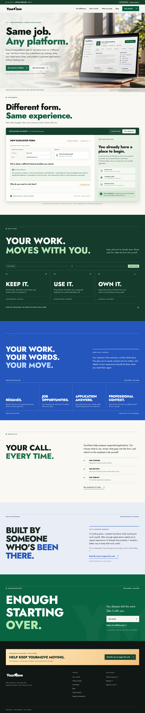
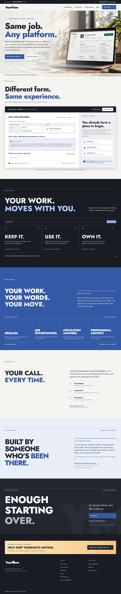
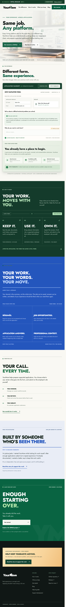
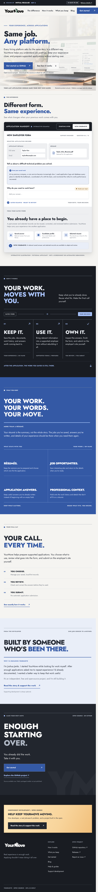
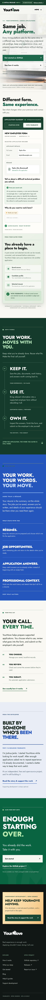
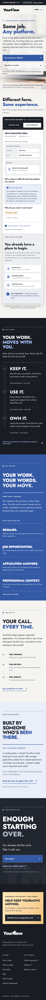
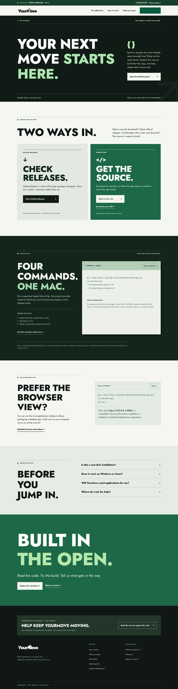
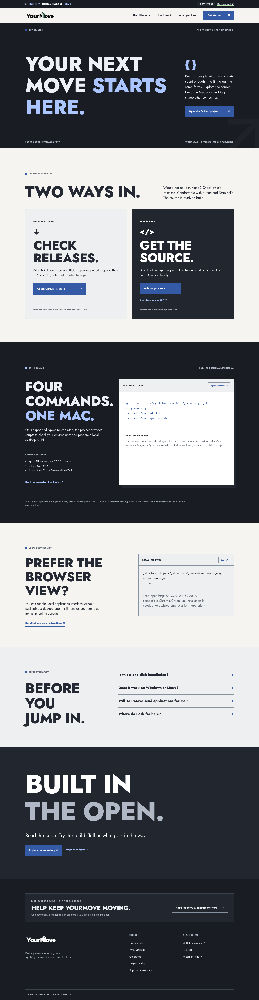
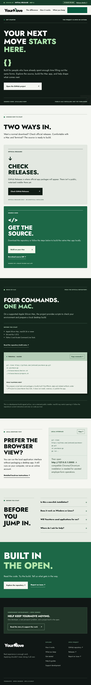
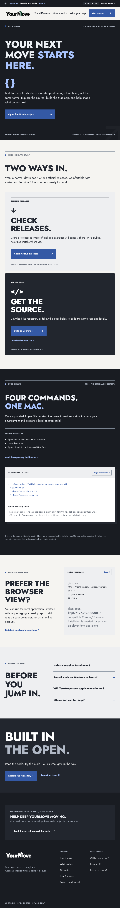
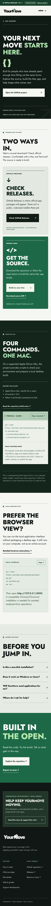
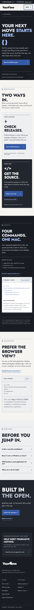
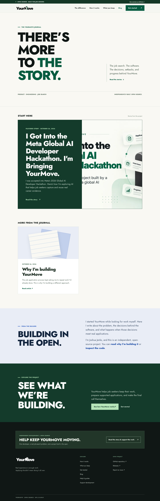
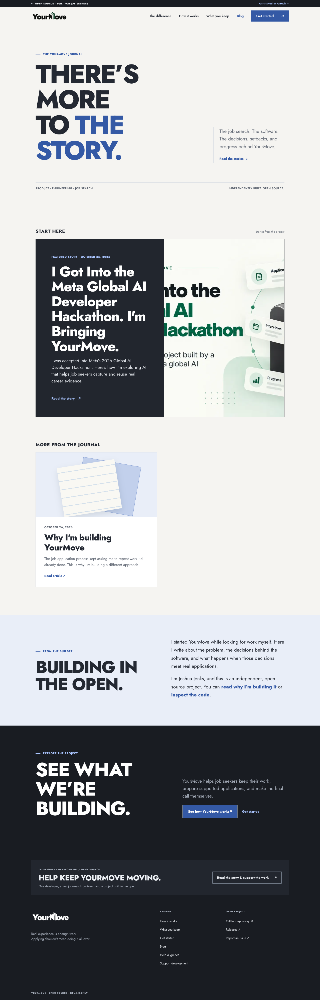
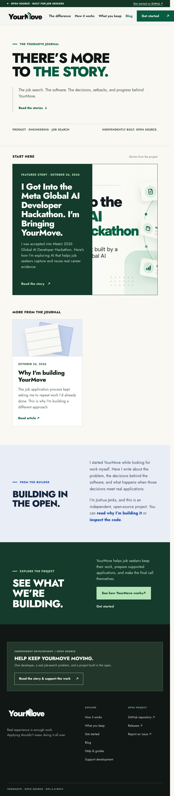
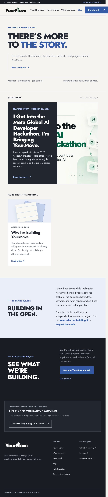
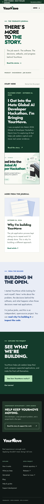
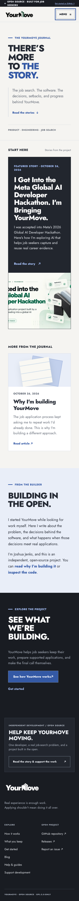
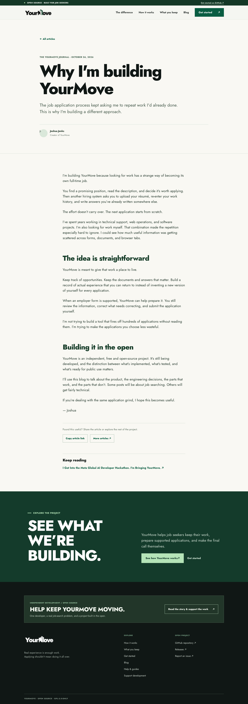
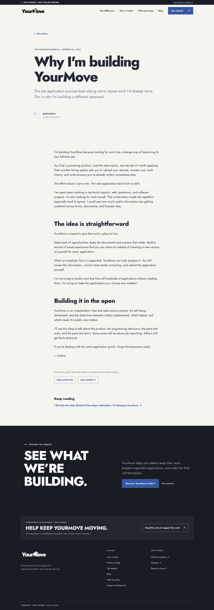
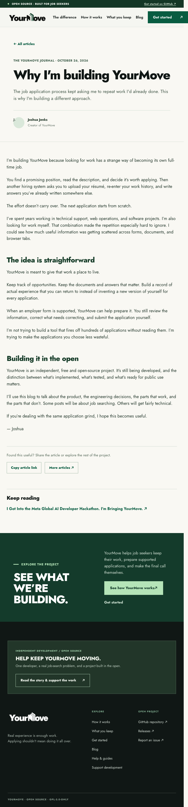
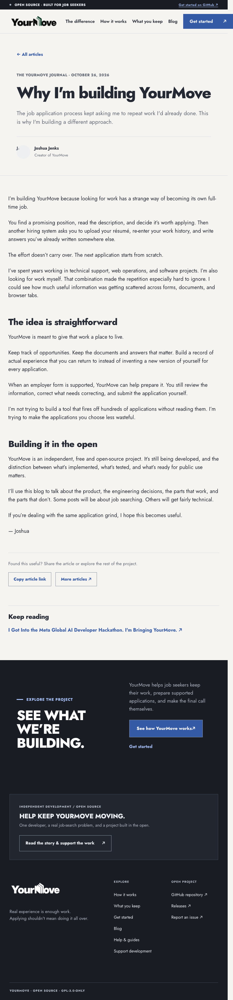
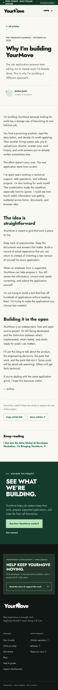
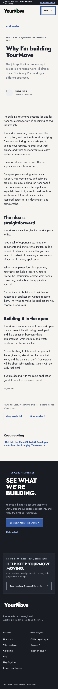
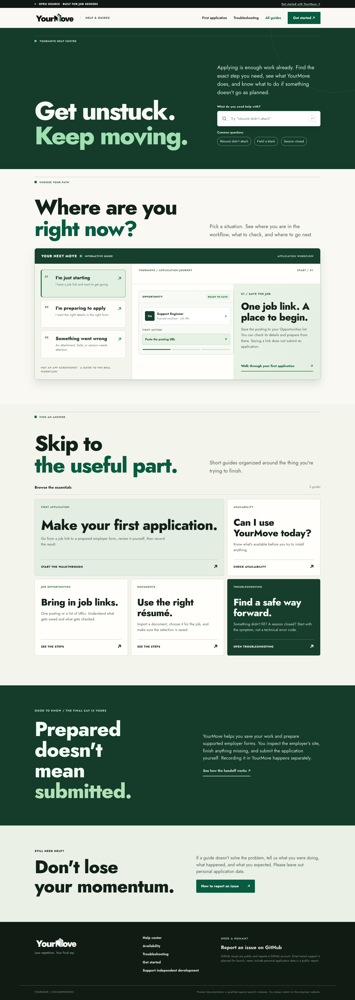
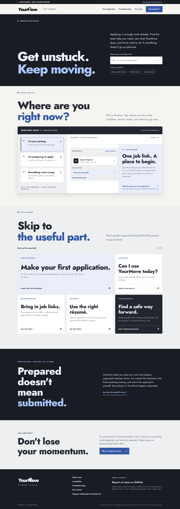
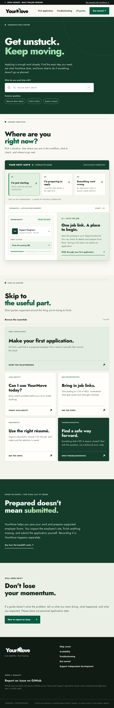
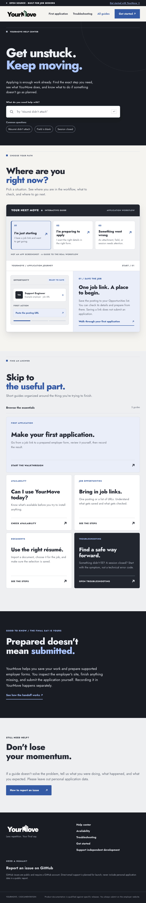
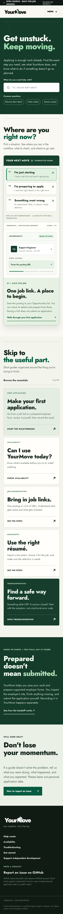
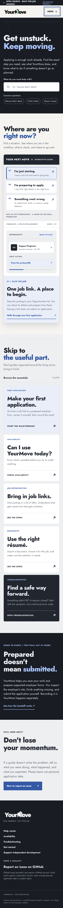
Blank comparison · Docs recovery attention · All other page captures